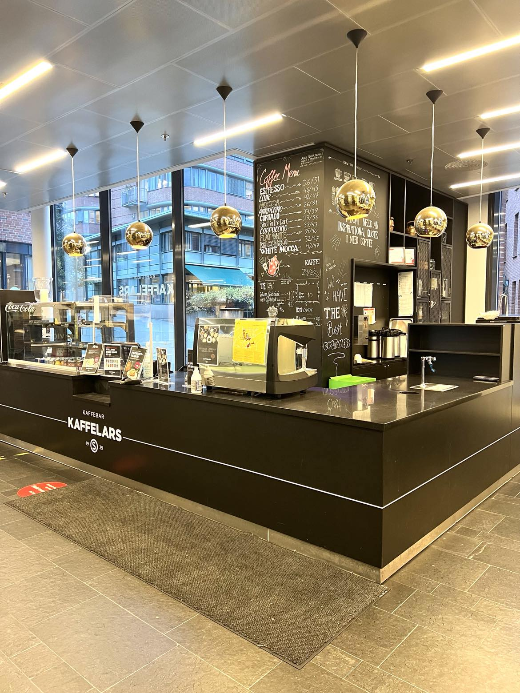

Kantinene på OsloMet Campus
Det er 8 spisesteder på Oslomets Pilestrede Campus. På denne siden finner du en oversikt over de ulike plassene du kan spise mat eller ta deg en kopp kaffe.
Hvilket utvalg har kantinene å tilby?
Kantinene på OsloMet har godt utvalg av mat og studentpriser. I Pilestredet 52 og Pilestredet 35 finner du også salatbar og varmmat! Vi tilbyr varmmat, salat, pålegg og brød på vekt. Vi har også et bredt utvalg av wraps og smurte produkter, kalde og varme drikker, bakevarer og meierivarer. De fleste spisestedene tilbyr full buffet som inkluderer kjøtt, fisk og kylling, men du kan også spise vegetarisk og grønt og betale mindre!
Kafe Eva
Kafe Eva er en liten, men god kafe som finnes i bygg P48. Kafe Eva har et stort utvalg av kioskvarer, ferdigpakkede salater og baguetter du kan ta med deg. Kaféen tilbyr også mat som for eksempel toast eller suppe, som kan varmes i kaféen.
Foto: privat
Kaffelars kaffebar
Kaffelars kaffebar, dette er stedet for god kaffe i P46. Ta en pause mellom forelesning og egenlesning, nyt en god kopp kaffe, litt te, påsmurt mat og kanskje en kakebit. Du kan også forhåndsbestille det du ønsker å spise i Mitt SiO-appen,- velg dato og klokkeslett, og plukk opp bestillingen til ønsket tidspunkt.
Foto: privat
Lillefri kaffebar
Det finnes også en kaffebar i P42, den heter Lillefri kaffebar. I kaffebaren Lillefri på Bislett får du gode kaffedrikker og te, deilige kaker og nylagede wraps og baguetter.
Foto: privat
Olaf spiseri
Olaf spiseri finner du i bygget P35. Det er samme bygg som du finner datatorget i, og vil være den nærmeste kantinen om du befinner deg der. Olaf spiseri tilbyr buffet med varmmat, supper, pålegg og brød, hvor du betaler på vekt. Du finner også et bredt utvalg av wraps og smurte produkter i tillegg til kaker og ulike varme og kalde drikker.

Foto: privat
Annas spiseri og Unionen Fyrhuset
Bibliotekets samling dekker fagområdene:offentlig administrasjon og ledelse, sosialfag, økonomi og administrasjon, bygg- og energiteknikk, maskin, elektronikk og kjemi, informasjonsteknologi, velferds- og arbeidslivsforskning I samlingen finner du blant annet pensum, tidsskrifter, faglitteratur, offentlige publikasjoner, standarder og studentoppgaver.
Foto: privat
Andrea spiseri
Andrea spiseri ligger i bygget P32. I Andrea spiseri kan du forsyne deg med varmmat, suppe, salat, pålegg og brød fra vår buffet, og betale på vekt. I tillegg finner du et bredt utvalg av wraps og smurte produkter, fristende kaker og bakevarer og gode kaffedrikker. Alt servert i store, lyse og moderne lokaler.
Kafe Årstiden
Kafe Årstiden ligger i Stenberggata 26-28. På Kafe Årstiden er både menyen og interiøret tilpasset sesongen i form av råvarer, smaker og farger. Her får du sesongens varmretter og salat på vekt. Årstiden har også egen yoghurtbar, og tilbyr nysmurte baguetter, kaker og et bredt utvalg av kaffedrikker.

Foto: privat